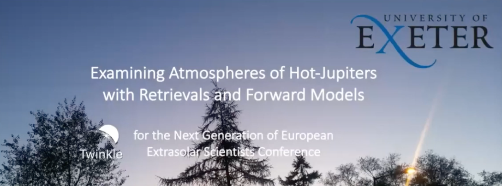

Speaker Events
I enjoy both public speaking and communicating complex scientific topics to a variety of audiences--be they fellow experts, or simply interested members of the public. I have done extensive outreach throughout my studies (see my Outreach page and do reach out if there's an outreach event I can help with!), but also have presented at many conferences, events, and even created lecture series.
Speaking events
Machine learning and AI ethics
- Invited speaker for EXIST Exeter, December 2023, The Ethics of AI and ML (see image right)
- Q&A on AI and ChatGPT: What is it + why does it matter? with the Exeter Science Centre
As part of the University of Exeter Astrophysic's department's regular Tuesday talks, I gave a presentation on ChatGPT based on how students in my teaching modules use it, and how academics can and should respond to the presence of ChatGPT in classrooms. As a result of this, my slides have been shared with a few other academics who have showcased them in their own classrooms. If you are interested in teaching your students about how machine learning techniques like ChatGPT work, how they are different from Google, and the ethics behind using AI-tools, please get in contact!
I have also presented to University of Exeter admin departments on to best use AI in HR practices. My experience and knowledge in AI ethics overall means I am well placed to provide information in how to approach implementing AI no matter your expertise. Therefore, please get in touch if you would like to understand how to use it best in your industry!
Environmental science and climate crisis
- Organiser and moderator of the joint Exeter Picturehouse GreenScreens and Global Systems Instite film and panel event for award-winning documentary How to Blow Up a Pipeline
- Organiser and moderator of the joint Exeter Phoenix cinema and Global Systems Instite film and panel event for award-winning documentary The Territory. This event nearly sold out and led to an Above and Beyond Award from the University of Exeter
Conferences
Academic invited speaker events
- Invited speaker for Twinkle Space Mission, April 28 2022, Twinkle and the Next Generation of European Extrasolar Scientists
- Speaker at ARES Day, November 18 2020
- Presenter for IOP webinar Wellbeing for physics students in uncertain times
- Invited speaker at Maynooth University, February 15 2020, Joint Congress of University Astronomy Societies 2020
Additional conferences and workshops I have attended so far, where you may have met me, include:
- UKRI STFC Introductory Course in Astronomy for New Research Students--August 2019, University of Kent
- K2-18b Workshop--November 2019, University College London
- ARIEL: Science, Mission, and Community 2020 Conference--January 2020, ESA/ESTEC (Netherlands)
- JWST UK Masterclass--March 2020, University of Exeter
- Twinkle Consortium Meeting--April 2020 (Virtual)
- ARIEL Consortium Meeting--May 2020 (Virtual)
- Exoplanets III--July 2020 (Virtual)
- ARIEL Consortium Meeting--February 2021 (Virtual)
- Exoplanets-A: Exoplanet atmosphere characterization: from HST and Spitzer to JWST--March 2021
- ARIEL Consortium Meeting--June 2021 (Virtual)
- Tipping Points Conference--September 2022, University of Exeter
- Communicating your research to policymakers--October 2022 (Virtual)
- Welcome to Westminster: the basics of policymaking--October 2022 (Virtual)
- Standing Up to Science--October 2022, Wellcome Collection in London
- Creative writing workshop to co-create 12 poems for 12 days of COP28 between the UK and UAE--March 2023 (Virtual)
- Global Systems Institute Gaia workshop--March 2023, University of Exeter
- ScienceWrite 2024 programme--March-July 2024, the Royal Society